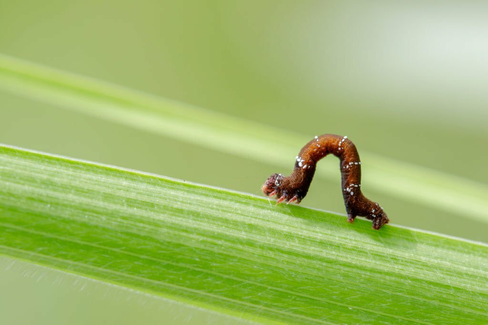

We Help You To Identify Pest And Deseases
pests and diseases in agriculture is crucial for farmers to identify, prevent, and manage potential threats to their crops.

Pest And Deseases That Are Commonly See In The Field
There are more pest and deseases that found in the field.they can be harmfull for the cultivation. And we provide some information about pest and deseases for you. Then you can identify those pest and deseases easily.


Here you can see some pest and deseases and you can see more pest and desease from bellow.Like those all pest and deseases are more harmfull for the cultivations.you can see more of things from bellow.
Thrips
Thrips are small, slender insects that feed on plant tissues, causing stippling and distortion of leaves.
Spider Mites
These tiny arachnids feed on plant sap, leading to yellowing and stippling of leaves.
Leafhoppers
Leafhoppers can transmit plant diseases and cause damage by feeding on plant sap.
Wireworms
Wireworms are the larvae of click beetles and can damage crops by feeding on roots and seeds.